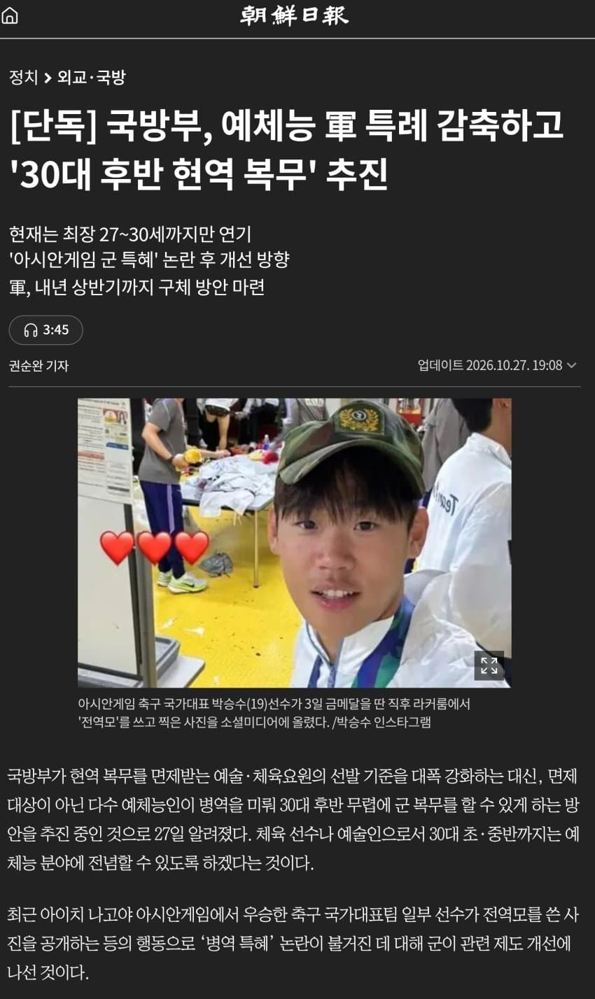

군대때문에 어쩔 수 없이 은퇴하는 스포츠 선수들은 좋긴 할 듯?
근데 30후면 행보관이랑 나이 비빌수도 있을거라 많이 불편할듯...

군대때문에 어쩔 수 없이 은퇴하는 스포츠 선수들은 좋긴 할 듯?
근데 30후면 행보관이랑 나이 비빌수도 있을거라 많이 불편할듯...
그냥 30대 후반에 기간 늘려서 깡촌에 재능기부할수있는곳에 박아넣으면 인정할꺼같은데
우린 그걸 강제징용이라 부르기로 했어요
공익도 있는데 뭘 새삼스럽게
강제 징용은 그냥 당연한 베이스로 깔고 가는거고.. 누군 가고 싶어서 가는게 아니고
국방 유지를 위해서 없앨 수도 없는거닌깐
지금은 뭐 강제징용 아님?
지금 현행안이 재능기부하라고 의무봉사시간 있음.
징병이랑 징용은 다름. 의무경찰 사라진 이유도 인권기구에서 이건 징병아니고 강제징용이다 해서 국제적으로 문제되어서이기도 함
30 후반은 너무 늦은거 아닌가
안그래도 몸갈리는게 스포츠인데 갈때 되면 이부상 저병으로 다빠지겠네
공익 가라는거지 뭐
박승수
이기혁
양민혁
이 3명의 위인을 잊지않겠습니다
징집냥이 ㅠㅠ
그 들이 싸질러 놓은 "1" 이 점점 커지고 있다 ㅋㅋㅋ
이것도 하고 여자군대보낼방법좀 연구하라고 씨발새끼들아
티배깅한놈들 다 어디갔어
걔들은 안감 ㅋㅋㅋ
꺼드럭 ㅋㅋㅋㅋㅋ
근데 가도 존나 편하긴 할 듯. 20중후반이 가도 배려 존나 해주는데 30 넘으면ㅋㅋㅋ 좀만 무리하면 도가니 나감
30대 후반으로 연기하고 부양가족 왕창 늘려서 군 안가면..
저출산에 도움은 될듯
그럼 인정이지 애도 안낳고 티배깅하는 애들 개많은데
예술이나 비인기종목은 가능한데 야구나 축구는 재산 9800만원 이하에서 걸릴수도
저 전역모사진은 볼때마다 뭔가 불쾌하네 ㅋㅋㅋㅋㅋ
모욕감이 듦. 아무리 아무나 다 하는 거래도 개개인에게 저 모자는 그렇게 가벼운 게 아닌데.
군대 폐급 관상이라..
저 꾸러기 표정이 킥임 ㅋㅋㅋㅋ
30대 후반 애키우는 가장 강제징용해가면 한가정 굶어 죽으라고? 씨발 뭔 말같지도 않은소릴
여성군복무는 조용~ 하면서 부정한 방법으로 한것도아니고 AI안경을 쓴것도아니고 금메달따서 군대안간당 한번 꺼드럭댔다고 바로 넷상에서 죽이기들어가고 몇주동안 거의 범죄자급으로 개쌍욕먹고 법까지 이렇게 바로 바뀌는건 기괴하긴했음ㅋㅋ
그냥 우리나라 사람들은 한남죽이기랑 나락보내기를 좋아함ㅇㅇ
어차피 징집은 강제니까 베이스로 깐다고치고 일률적인 공평을 논하면 왜 예체능계는 미뤄줘야하는지도 모르겠어
예체능계가 아닌 일반학생들의 시간은 가치나 밀도가 떨어진다고보는건가
20대의 시간은 다 소중할텐데
쟤는 진짜 선수들 사이에서 생활 가능할까?
ㅂㅈ년들 행정직으로라도 쳐넣으라고
애 4명 낳으면 군면제
여자들 뽑아서 행정이랑 취사 운전으로만 돌려도 꽤 도움 많이 될텐데
운전은 안돼...
ㅋㅋㅋㅋㅋㅋ 진짜 하다못해 병신들도 다끌고 가고 남자들 이악물고 보내내
데프트 피넛같은애들 사례보면
프로게이머들한테도 좋긴할듯